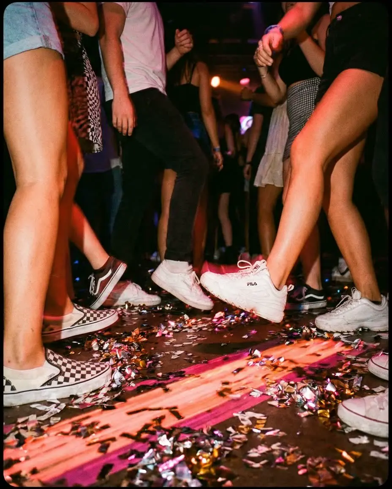

Tech House · Deep House · Electro House
Blue Coast X Club Vivy X La Treille
Afterwork y day party de electrónica en una cervecería con Club Vivy y La Treille.

En directo
Las fiestas de esta noche y las que están en pleno apogeo ahora mismo.
Tech House · Deep House · Electro House
Afterwork y day party de electrónica en una cervecería con Club Vivy y La Treille.
Hip Hop · RnB · Électro
10.ª edición del colectivo de street culture Épisode en el Mama Shelter con entrada libre.
🔥 Muy solicitada
Trance · Techno · House
Fenrick aterriza en Frigo 16 para una víspera de festivo explosiva a base de UKG y hard groove.
House · Électro
Cita en el Mama Shelter Nice para una noche musical de la mano de Épisode Culture.
House · Afro · Shatta
Inauguración de fiesta con el nuevo formato lounge en La Suite Cannes.
House · Shatta · Dancehall
Víspera de festivo con Di Liani a los platos: house, electro, shatta y dancehall hasta las 4 h.
🔥 Muy solicitada
Électro · Pop · Club
Dress code rosa y strass en el High Club con Le Bal des Licornes para la víspera de festivo.
Tech House · Deep House · Electro House
Afterwork y day party de electrónica en una cervecería con Club Vivy y La Treille.
Hip Hop · RnB · Électro
10.ª edición del colectivo de street culture Épisode en el Mama Shelter con entrada libre.
🔥 Muy solicitada
Trance · Techno · House
Fenrick aterriza en Frigo 16 para una víspera de festivo explosiva a base de UKG y hard groove.
House · Électro
Cita en el Mama Shelter Nice para una noche musical de la mano de Épisode Culture.
House · Afro · Shatta
Inauguración de fiesta con el nuevo formato lounge en La Suite Cannes.
House · Shatta · Dancehall
Víspera de festivo con Di Liani a los platos: house, electro, shatta y dancehall hasta las 4 h.
🔥 Muy solicitada
Électro · Pop · Club
Dress code rosa y strass en el High Club con Le Bal des Licornes para la víspera de festivo.
House
Fiesta universitaria de la IUM con Francis Key a los platos en el Twiga Monte Carlo.
Tech House · Deep House · House
Sesión tech house íntima con Alex Duff en el Glass Club en pleno Carré d'Or.
Techno · Deep House · Disco
Electrónica inmersiva y atardecer en el entorno histórico del Fort Napoléon.
Afro House · House · Club
Fusión de percusión en vivo y clubbing chic oriental y afro house frente al mar en Antibes.
Électro
Crête & Moustache y sesión sound system de dub fiestera en formato club en el Live.
House · Hip Hop · Électro
El pub crawl imprescindible de Niza con 4 bares, chupitos incluidos y entrada VIP a la discoteca.
Disco · Électro
Fiesta de Viernes 13 con dress code verde y fiestón con sesión de DJ Sylvain P en 600 m².
Tech House · Deep House · House
Sesión 100 % house music en plan boiler room a precio mini.
Tech House · House · Club
Ambiente de clubbing íntimo y sonido house en pleno centro peatonal de Niza.
🔥 Muy solicitada
Afro House · Tech House · Deep House
El productor Malive en DJ set de afro house y tech house en el Twiga Monte Carlo.
Deep House · House · Indie
B2B exclusivo entre Chris.A y Ugo Puccinelli en el Glass Club Cannes.
House · Shatta · Reggaeton
Ambiente caliente en la Promenade con la residencia de referencia de reggaetón y shatta.
Afro House · Tech House · House
Primera edición del concepto Nightly con Dovnrobs en el ELVA Club de Cannes.
Minimal · Techno · Tech House
Noche de deep techno y tech de la mano de Club Bizarre y Sensoria en la brasserie de Niza.
Afro House · House · Latino
Reapertura de l'Auberge Tao en plan chill con set de afro y latino house a cargo de Aaron.
Électro · Pop · Indie
El mítico dúo de Prayer in C en directo íntimo en el Mas d'Hiver.
Pop · Indie · Club
Cuatro bandas de punk rock y garage reunidas en el escenario de la MJC Picaud por 10 euros.
House · Disco · Électro
Mini boiler room con el DJ en el centro del club y sets de house, disco y pop.
Minimal · Techno · House
Laurent N. y la crew Technokronic toman los mandos de L'Antre Techno.
Électro · Années 80 · Pop
Fiesta retro gigante bajo carpa junto al mar con DJ set festivo a precio mini.
Trance · Techno · House
Rave techno y psytrance con Les Tocards en el Green Musik de Antibes.
Tech House · Electro House · House
El dúo Alban Dwz & Matteis toma el control del nuevo templo house de Var.
House · Hip Hop · Électro
Clubbing electro y house en pleno corazón de la noche nizarda en OMA Club.
Afro · Shatta · Dancehall
DJ Shaylan, Gianni y MC Mada le prenden fuego a Honey Club a ritmo de shatta y rap.
Afro House · Tech House · House
Noche de sábado a puro house, afro house y tech house con Lizzie en el Glass Club.
House · Hip Hop
Planazo de clubbing de sábado noche frente al mar en la Prom'.
Acid Techno · Techno · House
After de domingo 100 % vinilo, techno y tribe con el cofundador de Trakkass.
Afro House · House · Rap
Day party festiva con los pies en el agua con DJs de house y afro house en Bocca Mar.
RnB · Électro
Selah Sue en directo electro-soul en el espectacular marco de la Opéra Garnier.
Tech House · Deep House · House
All-night set de tech house y deep house de Alex Duff en pleno corazón de Cannes.
House · Électro
Primera fiesta inside en Servan con DJ set de Aaron y Paul Palmera a la percusión.
🔥 Muy solicitada
Hard Techno · Techno · Électro
Paul Seul de Casual Gabberz y Ascendant Vierge aterriza en Frigo 16.
Afro House · Tech House · House
Cita house con Laurent N., Liza y DJ Safire en So Blue Antibes.
Disco · Électro · Club
Dress code Blanco y Negro y b2b de DJ Pascal y DJ Jérôme Delplanque.
Tech House · Deep House · House
Noche exclusiva de house y afro en Glass Club para celebrar el cumple de Axel con consumición.
House · Hip Hop · Rap
La gran cita universitaria del viernes noche en la Promenade des Anglais.
El rock psicodélico electrizante de los californianos Frankie and the Witch Fingers sobre el escenario.
House · Disco · Électro
DJ set house y disco de Jordan Kowen en Mama Shelter, entrada gratis.
Acid Techno · Techno · House
Alienduch a los platos para un set enérgico entre house, rave y acid techno.
Tech House · House
Fiesta oficial Mister Fetish France en Glam con sets de house y tech house hasta el amanecer.
House · Hip Hop · Électro
Fiesta clubbing imperdible de hip-hop y house el sábado por la noche en OMA Club.
Hip Hop · Électro · Pop
Temazos de hip-hop y electro para la gran cita fiestera del sábado en la Prom'.
Melodic Techno · Techno · Tech House
Inmersión melodic techno y tech house liderada por Nico.V en Glass Club.
House
Day party house en el rooftop de Le Méridien frente al mar con atardecer y dress code azul y blanco.
Melodic Techno · Afro House · Tech House
El colectivo Club Sonore reúne a los jóvenes creativos en Mama Shelter.
Disco · Funk · Électro
Release party de funk e italo disco con entrada gratis en Frigo 16 con Les Jerrycans.
🔥 Muy solicitada
Disco House · Electro House · House
Yuksek y Roxie en DJ set de electro y house en Dix-Huit en Niza.
Afro House · Deep House · House
Set de afro house y deep house a puro ritmo con KX DJ en Glass Club Cannes.
Afro House · House · Afrobeat
Graves de amapiano y ritmos afrobeats soleados para una noche con mucho calor en 109.
House · Hip Hop · Rap
Set de electro-pop y house festivo con entrada libre en Mama Shelter con Trvchi.
Electro House · House · Club
Takeover total de High Club por Coachellito con un B4B exclusivo y nueva escenografía.
Tech House · Deep House · House
Joyitas de tech house y deep house mezcladas por Ugo Puccinelli en Glass Club.
House
After desde las 5 de la mañana con Da Grow a los mandos pinchando UK bass y gangsta house.
Disco · Pop
Fiesta vintage al ritmo de los temazos de los 80 en el Mas d'Hiver.
Techno · Acid · Tech House
Sets en vinilo y kicks con mucho groove de la mano de Papeguay y Lydia Scarfo en Baraza.
Hip Hop · Électro · Pop
Formato comercial y hip-hop para desconectar y darlo todo un sábado por la noche frente al mar.
Tech House · Deep House · House
Alex Duff a los platos para una noche de house y tech house a tope de energía.
🔥 Muy solicitada
Melodic Techno · Acid Techno · Minimal
Acid Pauli aterriza en Frigo 16 para una sesión de electro psicodélico imperdible.
House · Électro
Noche 100% de Niza y temazos house en la pista principal de la Prom'.
Disco · Électro
Concierto gratis de Bon Entendeur al aire libre para la apertura de la estación de esquí.
Afro House · Electro House · House
Edición navideña diferente y con los pies en el agua en Playa Chica, en la bahía de Cannes.
Hip Hop · RnB · Électro
Vibra baddie, bangers de hip-hop estadounidense y RnB para prenderle fuego a High Club.
Afro House · House · Pop
Beats electrónicos y melodías orientales el domingo por la noche en La Suite.
Électro · Pop · Indie
Los autores del hit Hey You en directo en Stockfish a precio de estudiante.
🔥 Muy solicitada
Techno · Dancehall · Hip Hop
Brodinski revienta Frigo 16 a base de trap wave, electro y temazos club.
Disco · Années 80 · Pop
DJ set retro y ambientazo de fiesta gratis en la place Formigé de Fréjus.
Électro
¡Noche alternativa de darkwave y post-punk hasta las 3 de la mañana en Studio 13 en Cannes!
Tech House · Électro
Show de láseres, performers y kicks de tech house bien contundentes para tu sábado noche.
Électro
¡DJ Click suelta sus bajos electro en Stockfish para una fiesta universitaria original!
Afro House · House · Électro
El DJ residente de Ibiza Ben Carter enciende Le Dix-Huit en una sesión NEON XP.
Disco House · House · Funk
Pista de patinaje indoor y DJ sets de disco funk con entrada libre en Frigo 16.
House · Disco · Funk
Sesión de roller clubbing retro con Prosper, B.I.M y shows freestyle.
House · Hip Hop · Électro
Celebra el arranque de las vacaciones de Navidad en la gran pista de baile frente al mar.
Melodic Techno · Afro House · Tech House
Day party de opening en las pistas de Auron con el crew Coachellito.
Afro House · Tech House · House
Fiesta de Navidad del crew Sud'Spicious con el sound system VOID en Glass Club.
Ninguna fiesta coincide con estos filtros.
Organizadores


 HouseHigh ClubNice
HouseHigh ClubNice


 Afro HouseGlass Club CannesCannes
Afro HouseGlass Club CannesCannes